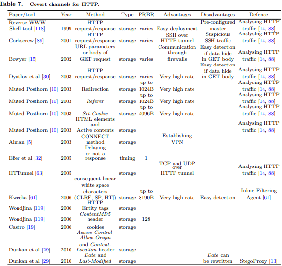

HyperText Transfer Protocol (HTTP). Even most restrictive organizations usually allow the HTTP traffic.
Dyatlov et al [30] suggest covert storage channels using header and/or body of the HTTP request/response. There
is no limits from the protocol itself in the size of the HTTP header or the body. But the size of all HTTP headers
together depends on platform - Apache servers accept headers with size up to 8KB, IIS up to 8KB or 16KB
depending on the version. The Reverse WWW Shell tool [118] demonstrates how effective is HTTP in hidden
messages delivery. In practice, the client slave application contacts the pre-configured master via an outgoing
HTTP Request. The master application send shell commands as HTTP Response packets, and output from
commands return from the slave as cgi script HTTP GETs. Bowyer [15] uses HTTP for secret communication
with Trojans behind firewalls, with the secret messages encoded as URL parameters or after GET request.
Bauer [10] suggests a protocol “Muted Posthorn” that allows to create an anonymous overlay network by exploiting
the web browsing activities of regular users. the protocol uses five HTTP/HTML mechanisms: redirects, cookies,
Referer headers, HTML elements and Active contents.
Kwecka [61] hides data in HTTP using the fact that HTTP treats any amount of consequent linear white space
characters (optional line feed [CLRF], spaces [SP] and tabs [HT]) present in the header, in the same way as a
single space character. For example, [HT] can be a binary one and [SP] can be a binary zero. Headers come in no
specified order, so it is possible to embed data in the ordering of the headers. Header names are case-insensitive,
so using the different capitalisation of the header values can be used for covert channel. Alman [5] showed that
due to a weakness in the CONNECT method in the HTTP protocol, arbitrary connection can be made through
a HTTP proxy server and even a VPN can be established. Van Horenbeeck [119] implemented a tool Wondjina
that creates a tunnel using the HTTP Entity tags (ETag and If-None-Match headers), which allows a client to
verify whether its locally cached copy is still current. Even a Content-MD5 header can be used for transferring up
to 128 bits of data per HTTP message. Similar ideas are used in [29], together with Access-Control-Allow-Origin
and Content-Location header. Another approach involves modulating the least significant bits of the date-based
fields such as Date and Last-Modified.
Eßer and Freiling [32] suggest covert timing channel using HTTP, in which a web server sends covert data to a
client by delaying a response (binary 1) or responding immediately (binary 0). Castro [19] suggest using cookies
for creating covert channels in HTTP.
Padgett [89] developed a tool Corkscrew for tunneling SSH over HTTP proxy, and LeBoutillier [63] implemented
a tool HTTunnel for tunneling TCP or UDP over HTTP.
Infranet [33] is a framework which uses covert channels in HTTP to circumvent censorship. Infranet’s web servers
receive covert requests for censured web pages encoded as a sequence of HTTP requests to harmless web pages
and return their content hidden inside harmless images using steganography.
